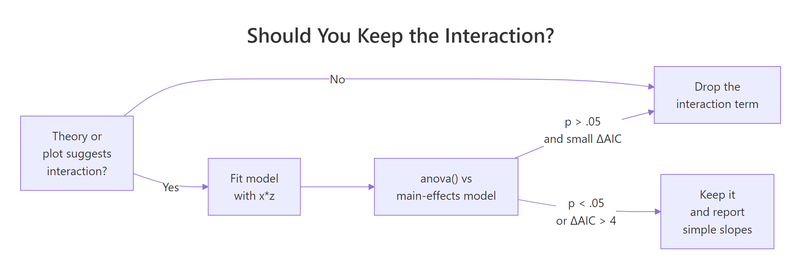
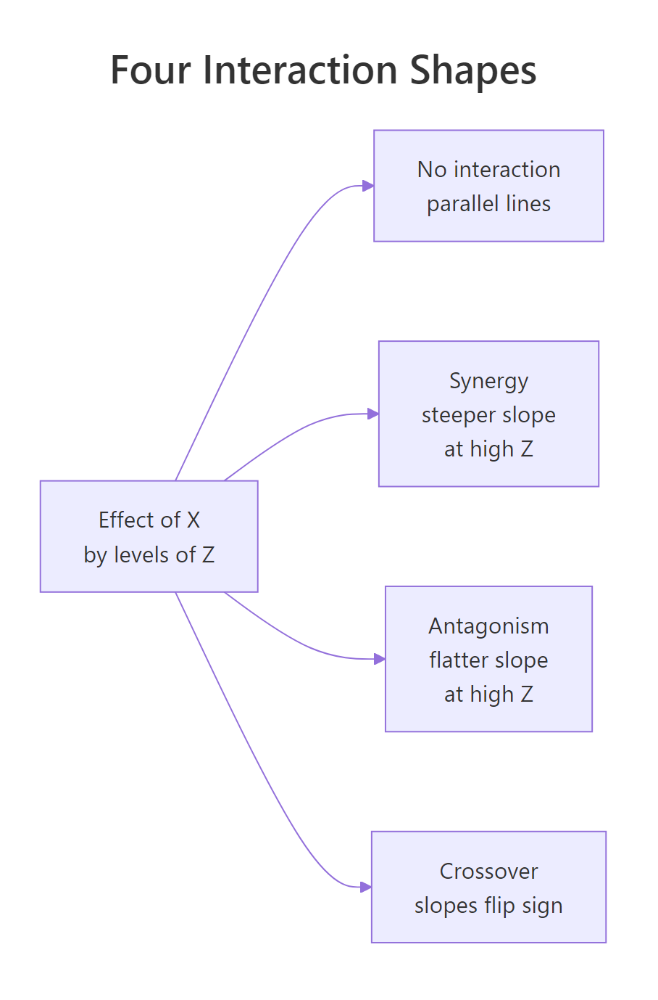
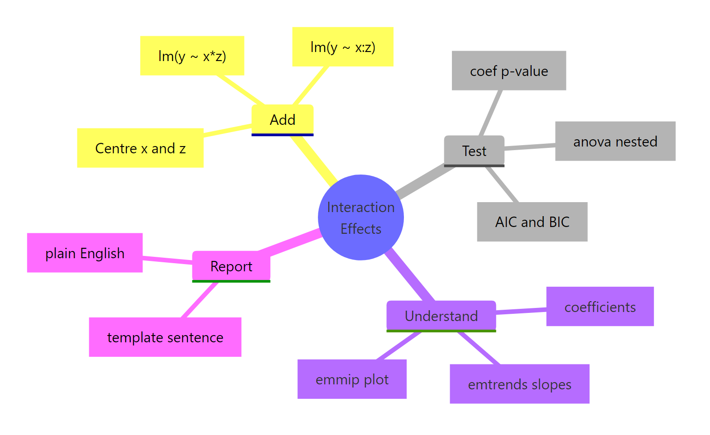

Interaction Effects in R: Add Them, Test Them, and Actually Understand the Output
An interaction effect means the effect of one predictor on the outcome depends on the value of another. In R you add it inside lm() with * (which expands to both main effects and the cross term) or : (cross term alone), and read the interaction coefficient as the change in slope per unit of the moderator.
How do you add an interaction term to a linear model in R?
Plain lm(mpg ~ hp + wt) assumes the effect of horsepower on fuel economy is the same at every weight. That is rarely true. Heavy cars may respond to horsepower differently from light ones. To let the slope of hp shift with wt, write hp * wt in the formula. The * operator expands into hp + wt + hp:wt, so you get both main effects plus the cross term that captures the interaction.
Here is the model and the four-row coefficient table that comes out of it. Watch the hp:wt row, that is the interaction.
The hp:wt row is what the interaction adds. Its estimate (0.0278) and p-value (0.0015) say that the slope of mpg on hp is not constant, it shifts by +0.028 for every extra unit of wt (1,000 lbs). The negative main effects of hp and wt still apply, but they are now conditional. We will unpack what each coefficient means in the next section.
* to expand main effects + interaction in one stroke. Writing hp * wt is shorthand for hp + wt + hp:wt. The two forms produce identical fits, so pick whichever reads better.Try it: Refit the same model using : plus explicit main effects instead of *. Check that the coefficients match.
Click to reveal solution
Explanation: hp * wt is equivalent to hp + wt + hp:wt, so the fits are identical. Use : when you want the cross term but not both main effects (rare in practice, see the hierarchical-principle warning later in the post).
What does an interaction coefficient actually mean?
The interaction coefficient is the rate of change of one slope with respect to another variable. Once a cross term enters the model, the main effects on their own no longer answer "what is the effect of hp on mpg?" They answer that only at the special case where the moderator is zero.
Write the model out with symbols. For our mtcars fit:
$$E[\text{mpg} \mid \text{hp}, \text{wt}] = \beta_0 + \beta_1 \, \text{hp} + \beta_2 \, \text{wt} + \beta_3 \, (\text{hp} \times \text{wt})$$
Where:
- $\beta_0$ = expected mpg when
hpandwtare both zero (extrapolation, not meaningful here) - $\beta_1$ = slope of
hpwhenwtis exactly zero - $\beta_2$ = slope of
wtwhenhpis exactly zero - $\beta_3$ = how much the slope of
hpshifts per extra unit ofwt(or symmetrically, how the slope ofwtshifts per extra hp)
Plug the numbers in. The slope of mpg on hp at any given weight is:
$$\text{slope}_{\text{hp}}(\text{wt}) = \beta_1 + \beta_3 \, \text{wt} = -0.12 + 0.028 \, \text{wt}$$
So at a 2,000-lb car (wt = 2), each extra horsepower drops mpg by roughly -0.12 + 0.028(2) = -0.064. At a 4,000-lb car, the same extra horsepower drops mpg by only -0.12 + 0.028(4) = -0.008, almost nothing. The data is saying: light cars pay a real mpg penalty for more power, heavy cars are already at low mpg and barely change.
hp coefficient was the average effect of hp. With the interaction in, it is the effect of hp only at the level where the moderator equals zero. That is why centering predictors (subtracting the mean before fitting) makes interaction models much easier to read.Let's see this slope shift with a one-line predict() call. We will fix hp at 150 and ask what mpg the model expects at three different weights.
Going from wt = 2 to wt = 4 drops predicted mpg by 21.95 - 14.96 = 6.99 mpg. If the model were additive (no interaction), the drop would be the same regardless of hp. With the interaction, the drop itself is a function of hp. That curvature is the whole point of an interaction.
Try it: What does the model predict for mpg at hp = 120, comparing wt = 2 to wt = 4? Use predict().
Click to reveal solution
Explanation: At hp = 120, mpg drops by 6.32 going from 2,000 to 4,000 lbs. At hp = 150 (above), the same weight change dropped mpg by 6.99. The drops differ because the interaction makes the wt slope depend on hp.
How do you handle continuous × categorical and categorical × categorical interactions?
The same * syntax works when one or both predictors are categorical, but the interpretation changes. With a continuous-by-categorical interaction, you are asking "does the slope differ between groups?" With categorical-by-categorical, you are asking "do the cell means depart from a simple additive pattern?"
Convert categorical columns to factors first. R will silently treat numeric 0/1 columns like am (transmission) as continuous and produce nonsense if you forget.
Read this row by row. The wt row is the slope of mpg on wt for the reference group (auto). For automatic cars, every extra 1,000 lbs costs 3.79 mpg. The ammanual row is the intercept shift for manual cars, not their slope, and it is large because manual cars in mtcars are lighter on average. The interaction row, wt:ammanual = -5.30, says manual cars lose an extra 5.3 mpg per ton beyond what automatic cars lose. So the slope of wt for manuals is -3.79 + (-5.30) = -9.08. Manuals get punished more by weight than autos.
In a categorical-by-categorical model, the interaction terms test whether the combination of two factor levels is more or less than the sum of its parts. Both interaction rows here have large p-values, so the data is roughly consistent with an additive pattern: manuals get a fixed +5.2 mpg bonus regardless of cylinder count, and the cylinder penalty is the same for both transmissions. We will return to formal testing in the next section.
contrasts explicitly. R chooses the alphabetically-first level as the reference by default. Use factor(x, levels = c(...)) to control which level becomes the baseline, and the rest of the coefficients become much easier to read.Try it: Fit mpg ~ wt * cyl on mtcars2 (note: cyl is already a factor in mtcars2). Look at the coefficients and identify which cylinder group's slope of wt is steepest (most negative).
Click to reveal solution
Explanation: The slope of wt for 4-cyl cars (the reference) is -5.65. For 8-cyl cars it is -5.65 + 3.45 = -2.20. The 4-cylinder slope is steepest, meaning 4-cyl cars lose more mpg per ton of weight than 8-cyl cars.
How do you test whether an interaction is statistically meaningful?
Three checks usually agree, and you should run all three before deciding to keep an interaction in your final model. The coefficient p-value is the quickest. The nested-model F test via anova() is the most principled. AIC and BIC give a quick complexity-adjusted score. If theory or a plot suggests an interaction but all three tests come back null, drop the cross term.
The anova() route compares two models, one with and one without the interaction.
The F statistic is 14.1 with p = 0.0008, so adding the hp:wt term significantly improves fit. AIC tells the same story.
The interaction model's AIC is lower by 11.6, well past the rule-of-thumb threshold of 4 for "clearly better." Both diagnostics point the same way: keep the interaction.

Figure 1: Decision flow for keeping or dropping an interaction term. The three checks usually agree. When they conflict, trust theory and the plot first.
lm(y ~ x:z + z) with x dropped) makes the model depend on the arbitrary choice of zero for x, and your interaction coefficient becomes uninterpretable. Even if the main effect is "non-significant," leave it in.Try it: Use anova() to test the interaction in m2 (the wt × am model). Fit a no-interaction version called ex_m2_no_int and compare.
Click to reveal solution
Explanation: The interaction adds 90 units of explained sum of squares (F = 13.45, p = 0.001). Manual and automatic cars have meaningfully different wt slopes, so the interaction stays in.
How do you visualize an interaction in R?
A plot tells you the shape of the interaction. Four shapes show up over and over: parallel lines (no interaction), fan-in or fan-out (steeper slope at one end), and crossover (slopes flip sign). Naming the shape helps you describe the result without dragging the reader through coefficient algebra.

Figure 2: The four shapes an interaction can take when you plot the effect of X by levels of Z. Naming the shape (synergy, antagonism, crossover) lets you describe the finding in one phrase.
The fastest plot in R comes from emmip() in the emmeans package. It takes a fitted model and a formula moderator ~ predictor, and draws one line per moderator level.
The two lines fan out: at wt = 2 the predicted mpg gap between manual and auto is large, at wt = 5 it has shrunk. That is the interaction. Now build a publication version directly with ggplot2. We will plot the continuous-by-continuous case (m1, mpg ~ hp * wt) by fixing wt at three round values and letting hp sweep across its observed range.
Three coloured lines, one per wt level. The line for light cars (wt = 2.0) drops sharply with hp; the line for heavy cars (wt = 4.5) is nearly flat. That visual is the interaction, plain to anyone who can read a chart. No coefficient interpretation required.
wt (2.58, 3.32, 3.61). Match the at-values to whatever you plan to report in the text, so the figure and the prose tell the same story.Try it: Re-draw the emmip() plot for m2, but choose your own three weight values to show. Try wt = c(2.5, 3.5, 4.5).
Click to reveal solution
Explanation: The two lines diverge at low wt and converge at high wt. The interaction is "fan-in" reading left to right: heavy cars have similar mpg regardless of transmission, light cars differ a lot.
How do you report interaction results in plain English?
A reader who isn't a statistician needs three numbers: the slope (or cell mean) inside each level of the moderator, a comparison, and a p-value. Don't make them read coefficients. The emmeans package gives you exactly that table, ready to drop into a results paragraph.
For continuous-by-continuous interactions, emtrends() returns the slope of one variable at chosen values of the other.
Three numbers, each with a confidence interval. At a 2,000-lb car the slope is -0.065 (CI excludes zero, real effect). At a 4,500-lb car the slope is +0.005 and the CI spans zero (no effect). That is the whole interaction in plain numbers.
For continuous-by-categorical, ask emmeans for the slope of wt inside each level of am.
Now you can write the result in one paragraph any reader can follow:
Vehicle weight predicts mpg differently for the two transmission types (interaction F(1, 28) = 13.5, p = 0.001). Among automatic cars, every extra 1,000 lbs costs 3.8 mpg (95% CI: 2.2 to 5.4). Among manual cars, the same extra weight costs 9.1 mpg (95% CI: 6.5 to 11.7), more than twice the automatic-car penalty. The two confidence intervals do not overlap, so the slopes differ meaningfully.
Try it: Using slopes_am above, write a one-paragraph summary of the wt × am interaction in your own words. Aim for three sentences: one stating the interaction exists, one giving the auto slope with CI, one giving the manual slope with CI.
Click to reveal solution
Explanation: The structure is reusable: state-the-test, group-1-slope, group-2-slope. Numbers come straight from slopes_am. Avoid jargon ("simple slope", "moderator effect"), and pick units a non-statistician will recognise (mpg per 1,000 lbs, not per scaled unit).
Practice Exercises
Exercise 1: Test and report a continuous × categorical interaction
Fit lm(Sepal.Length ~ Petal.Length * Species, data = iris). Run a nested-model anova() against the no-interaction version. Then use emtrends() to extract the slope of Petal.Length for each species. Save the slopes table as my_iris_slopes.
Click to reveal solution
Explanation: The omnibus anova() is borderline (p = 0.07), but the slopes themselves climb from 0.54 (setosa) to 1.00 (virginica). Most of the interaction is the difference between setosa and the other two species. Report the simple slopes, mention the borderline test, and let the reader judge.
Exercise 2: Find the highest-mpg cell in a categorical × categorical model
Using mtcars2 (with am and cyl already as factors), add a vs factor, fit lm(mpg ~ am * vs, data = ...), and use emmeans() to compute the four estimated marginal means (one per am × vs combination). Identify which combination has the highest mean mpg. Save the table as my_cell_means.
Click to reveal solution
Explanation: The highest mean mpg (28.4) is for manual transmission with a straight-engine layout. Cell-mean tables answer "which combination is best?" directly, without forcing the reader to decode interaction coefficients.
Exercise 3: Plot a continuous × categorical interaction with custom anchors
Fit lm(Sepal.Width ~ Sepal.Length * Species, data = iris). Use emmip() to draw three lines (one per species), with Sepal.Length swept across c(4.5, 5.5, 6.5, 7.5). Save the resulting plot to my_iris_plot.
Click to reveal solution
Explanation: The setosa line slopes upward steeply, while versicolor and virginica are flatter. The non-parallel pattern is the interaction visualised. Pick anchor values that span the joint range of Sepal.Length in the data, not extrapolated extremes.
Complete Example
Here is the full workflow on airquality: does temperature predict ozone differently in different months? Fit, test, simple-slope, plot, write up.
The interaction is real (F(4, 106) = 5.3, p = 0.0006). In May, June, and September the slope of ozone on temperature sits around 2 ppb per degree F. In July and August it nearly doubles to 4.5 to 4.9 ppb per degree F, the temperature-pollution link tightens in mid-summer. A reader sees one paragraph, four numbers, one figure, and they have the result.
Summary

Figure 3: Workflow recap. Add with or :, test with anova() and AIC, understand with emtrends/emmip, then report in plain English.*
- Add an interaction with
lm(y ~ x * z)(expands to main effects + cross term) orlm(y ~ x + z + x:z). The two are identical fits. - Read the interaction coefficient as the change in slope of one predictor per unit of the other. Main effects no longer mean what they meant in an additive model.
- Test with
anova(no_int_model, int_model)for an F test andAIC()for complexity-adjusted comparison. Coefficient p-values are a quick check, not a substitute. - Visualise with
emmip()(quick) orggplot2 + predict()(publication). The plot's shape (parallel, fan, crossover) names the finding in one phrase. - Report simple slopes from
emtrends()or cell means fromemmeans(). Never publish an interaction coefficient without translating it to slopes a non-statistician can read. - Keep both main effects whenever you keep the interaction (the hierarchical principle). Three-way and higher interactions are rarely worth the interpretation cost; prefer subgroup analyses.
References
- Faraway, J. (2014). Linear Models with R, 2nd Edition. Chapman & Hall. Chapter 6: Interactions in Regression.
- Fox, J., & Weisberg, S. (2018). An R Companion to Applied Regression, 3rd Edition. Sage. Chapter on Linear Models with Categorical and Continuous Predictors.
- Lenth, R., emmeans package: Interactions in linear models. CRAN vignette
- Long, J., interactions package documentation. CRAN vignette
- Aiken, L. S., & West, S. G. (1991). Multiple Regression: Testing and Interpreting Interactions. Sage.
- UCLA OARC Stats, Decomposing, Probing, and Plotting Interactions in R. Seminar
- R Core Team. R Documentation: formula and lm. [
?formula](https://stat.ethz.ch/R-manual/R-devel/library/stats/html/formula.html)
Continue Learning
- Linear Regression in R, the foundation everything in this post sits on; understand main effects before reaching for interactions.
- Linear Regression Assumptions in R, interactions don't bypass the usual diagnostics; check residuals after every fit.
- Dummy Variables in R, categorical predictors get encoded into dummies, and reading interaction coefficients with factors gets easier once you know which level is the reference.